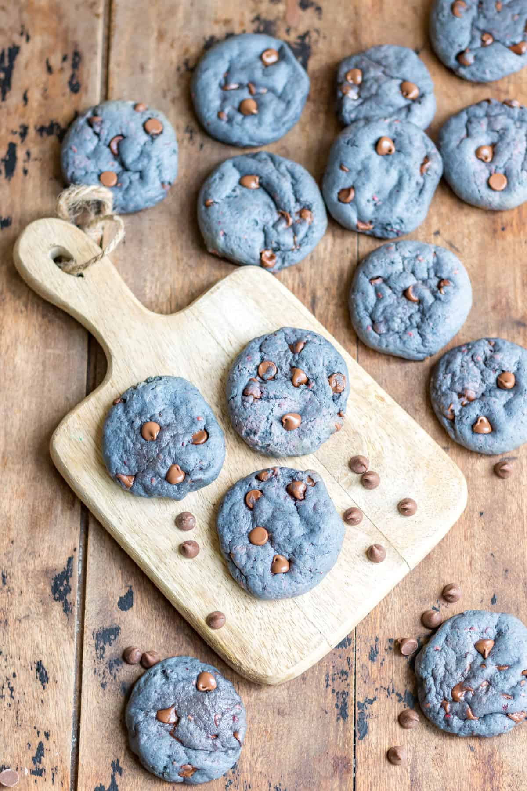

Blackberry Cookies

Description
Believe it or not,
these blackberry cookies are blue in color.
Made using fresh fruit and decadent chocolate chips,
this treat is sure to delight
Ingredients
- frozen or fresh blackberries
- butter, softened
- granulated sugar
- vanilla extract
- all-purpose flour (plain flour)
- baking soda
- teaspoon salt
- chocolate chips
Steps
- Preheat oven like a boss
- Purree blackberries until your hands give in
- Cream butter and sugar with mixer. If you don't own a mixer, just quit now
- Add blackberry puree and vanilla extract, beat it like an abusive father
- Whisk flour, baking soda, and salt in bowl. If these are for someone you despise, add garlic.
- Add blackberry mixture and chocolate chips to the bowl. If you're racist, add white chocolate chips.
- Cover this finished dough with whatever you can find and store in fridge. If you can't find adequate cover, consider using underwear
- Roll dough into round blue balls and place on baking sheet
- Bake it till you make it
- Don't forget to share with the kids at your local playground!
NOTE: All the above wordplay is for comedic purposes. Only jokes and fun here :)
For specific ingredient ratios and actual steps, support the original author HERE